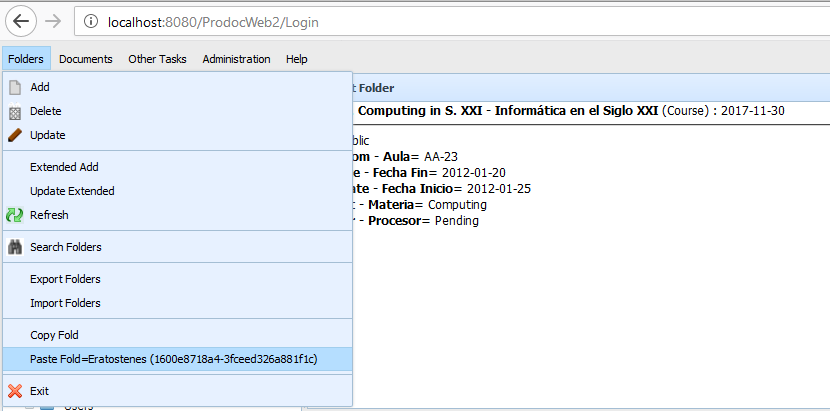

The functions of moving a folder allows to move a folder (and all the subfolders and documents contained) to another OpenProdoc folder.
For moving a folder, select the folder and activate "Folders -> Copy". This action selects the folder as an element to be copied, enabling the option "Folders -> Paste" and showing the title and unique code of the folder that will be copied. Then you must choose the destination folder and choose "Folders -> Paste". The folder (and all the subfolders and documents contained) will be moved as subfolder, deactivating the selection. Before pressing "Paste", it is possible to choose a another folder, which will replace the previous one.
It can not be done if there are no deletion permissions at least on the folder.
It must be taken into account that moving the folder to another folder DOES NOT CHANGE THE PERMISSIONS of the folder, it maintains the ACL that it had before being moved. It must also be remembered that the movement to another folder may imply that previously programmed tasks will not appply, or that new ones will apply (Purge, Export, ...), since most of the processes have an application scope of branches of folders.
